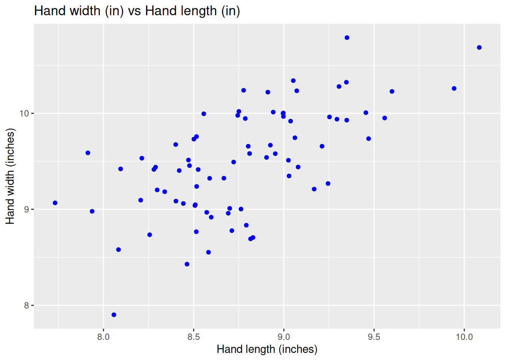
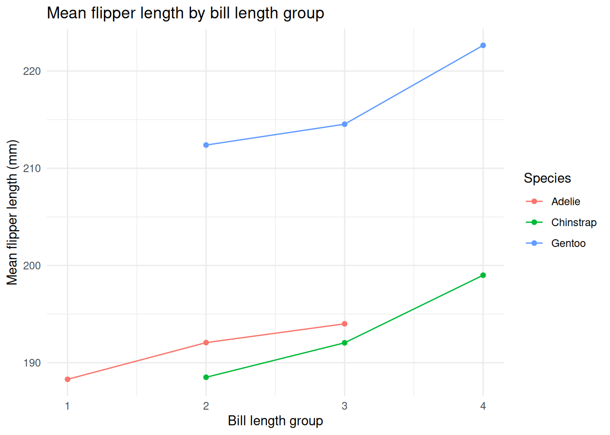

AE 11: Midterm ‘Live Coding’ Exam Practice 🏀⛹🐧️
Part 1 - NBA Draft Combine
The NBA Draft Combine is a multiple day event that takes place every May before the NBA draft in June. At the combine, college basketball players take medical tests, are interviewed, perform various athletic tests and shooting drills, and play in five-on-five drills for an audience of National Basketball Association (NBA) coaches, general managers, and scouts. How an athlete measures and performs during the combine can affect perception, draft status, salary, and the player’s future career. These stats are posted annually at https://www.nba.com/stats/draft/combine-anthro, which is where the data you’ll be using for this part comes from.
In addition to the tidyverse package, you will also need the readxl and the janitor packages for this part. Your analysis must use these packages.
The data are stored in two sheets of a single Excel file called nba-draft-combine-2425.xlsx, which is in your data folder. The two sheets and their contents are as follows:
- Sheet 1:
"Anthro"- Player names, positions, and anthropometric measurements (i.e., measurements of the body’s dimensions and shape) including:- hand length (in inches)
- hand width (in inches)
- height without shoes (in feet and inches, e.g., 8’ 10.50’’ = 8 feet 10.5 inches)
- standing reach (in feet and inches)
- weight (in pounds)
- wingspan (in feet and inches)
- Sheet 2:
"Strength and Agility"- Player names, positions, and strength & agility measurements including:- lane agility time (in seconds, lower the better)
- shuttle run (in seconds, lower the better)
- three-quarter sprint (in seconds, the lower the better)
- standing vertical leap (in inches, the higher the better)
- max vertical leap (in inches, the higher the better)
In both sheets, positions are given as abbreviations:
- C: Center
- PF: Power Forward
- PG: Point Guard
- SF: Small Forward
- SG: Shooting Guard
If you’re curious, you can read more about basketball positions on Wikipedia.
Question 1 - Import and join
Read each of the sheets in and save them as separate data frames in R, nba_draft_athro and nba_draft_strength_agility. Pay attention to any possible extraneous rows on top of the sheet(s) and handle them as needed. Once the data is in R, convert all variable names to snake_case (lowercase, with underscores instead of spaces). Save the data frames with the cleaned-up variable names with the same names as before, nba_draft_athro and nba_draft_strength_agility.
Note: For full credit on this question, you must use the read_excel() and clean_names() functions. If you’re unable to achieve the goals listed above with just these two functions, you can still get partial credit by using other functions to clean the data after reading it in.
Then, join the two data frames by player name, keeping only the players that are in both data frames. Name the joined data frame nba_draft_raw. Display the data frame and state the numbers of rows and columns in the data frame in a single sentence.
Suggested Answer
The combined df has 77 rows and 14 columns.
nba_draft_anthro <- read_excel("data/nba-draft-combine-2425.xlsx",
sheet = 1) |>
clean_names()
nba_draft_strength_agility <- read_excel("data/nba-draft-combine-2425.xlsx",
sheet = 2, skip = 1) |>
clean_names()nba_draft_raw <- nba_draft_anthro |>
inner_join(nba_draft_strength_agility, by = join_by(player))
nba_draft_raw# A tibble: 77 × 14
player position.x hand_length_inches hand_width_inches height_w_o_shoes
<chr> <chr> <dbl> <dbl> <chr>
1 Michael Aja… SF 9.5 9.75 6' 5.75''
2 Melvin Ajin… SF 8.5 9.75 6' 7.25''
3 Trey Alexan… SG 8.75 10 6' 3.25''
4 Izan Almansa C 9.25 9.25 6' 9.25''
5 Reece Beekm… PG 8.5 9 6' 1.25''
6 Adem Bona C 9.5 10 6' 8.25''
7 Trevon Braz… PF 9 10.2 6' 9.25''
8 Jalen Bridg… SF 9 10 6' 6.75''
9 Matas Buzel… SF 8.5 9.25 6' 8.75''
10 Carlton Car… PG 8.5 9.25 6' 3.75''
# ℹ 67 more rows
# ℹ 9 more variables: standing_reach <chr>, weight_lbs <dbl>, wingspan <chr>,
# position.y <chr>, lane_agility_time <dbl>, shuttle_run <chr>,
# three_quarter_sprint <dbl>, standing_vertical_leap <dbl>,
# max_vertical_leap <dbl>Question 2 - Check and clean
Joining the data by player name alone should have resulted in two position variables in nba_draft_raw: position.x and position.y. position.x is the position variable coming from the “left” data frame when you joined. position.y is the position variable coming from the “right” data frame when you joined.
First, check if position.x and position.y are the same for each player. Include a 1-2 sentence description of how you go about checking this – there are multiple ways you can do this.
If yes, remove one of the variables from the data frame, keep the other, and rename it to
position.If no, keep
position.x, removeposition.y, and renameposition.xtoposition.
Either way, save the resulting data frame as nba_draft. Display the data frame and state the numbers of rows and columns in the data frame in a single sentence.
Suggested Answer
To check whether the two columns have the same values for each player, I first created a new column same_pos that serves as an indicator variable; using if_else, an entry in this column is set to 1 if position.x and position.y are the same, and zero otherwise. Then, I filtered the data frame for all rows in which same_pos is 0, meaning the position columns differ. The result was an empty tibble, meaning these columns are the same for all players.
Now, the nba_draft data frame has 77 rows and 13 columns.
nba_draft_raw |>
mutate(same_pos = if_else(position.x == position.y, 1, 0)) |>
filter(same_pos == 0)# A tibble: 0 × 15
# ℹ 15 variables: player <chr>, position.x <chr>, hand_length_inches <dbl>,
# hand_width_inches <dbl>, height_w_o_shoes <chr>, standing_reach <chr>,
# weight_lbs <dbl>, wingspan <chr>, position.y <chr>,
# lane_agility_time <dbl>, shuttle_run <chr>, three_quarter_sprint <dbl>,
# standing_vertical_leap <dbl>, max_vertical_leap <dbl>, same_pos <dbl># A tibble: 77 × 13
player position hand_length_inches hand_width_inches height_w_o_shoes
<chr> <chr> <dbl> <dbl> <chr>
1 Michael Ajayi SF 9.5 9.75 6' 5.75''
2 Melvin Ajinca SF 8.5 9.75 6' 7.25''
3 Trey Alexander SG 8.75 10 6' 3.25''
4 Izan Almansa C 9.25 9.25 6' 9.25''
5 Reece Beekman PG 8.5 9 6' 1.25''
6 Adem Bona C 9.5 10 6' 8.25''
7 Trevon Brazile PF 9 10.2 6' 9.25''
8 Jalen Bridges SF 9 10 6' 6.75''
9 Matas Buzelis SF 8.5 9.25 6' 8.75''
10 Carlton Carri… PG 8.5 9.25 6' 3.75''
# ℹ 67 more rows
# ℹ 8 more variables: standing_reach <chr>, weight_lbs <dbl>, wingspan <chr>,
# lane_agility_time <dbl>, shuttle_run <chr>, three_quarter_sprint <dbl>,
# standing_vertical_leap <dbl>, max_vertical_leap <dbl>Question 3 - Help and correct
Suppose you are helping a friend who is working with these data.
- Your friend claims to have created an indicator (binary) variable labeling players who weigh less than 215 pounds (the average weight of an NBA player) as “below mean” and those who weigh 215 pounds or more as “above mean”. They also claim to have added this indicator variable to the data frame
nba_draft.
Here is the code they used:
Upon inspection of this code, you notice several mistakes and areas for improvement. Fix the code to accomplish your friend’s goals, and write a bulleted list describing and justifying each fix or improvement you make (maximum 1 sentence per fix).
Suggested Answer
Change the logical operator to \(>=\) to capture any instances in which a player is exactly the mean weight
Replace
"weight"withweight_lbsbecause 1) a variable reference should not be wrapped in quotation marks and 2) the correct variable is namesweight_lbsin the data frame“Update”
nba_draftby assigning it back to itselfSwap the ordering of the 2nd and 3rd arguments in the
if_elsefunction
- Your friend has also created a visualization of hand lengths and widths, and they want to color the points blue. But the visualization doesn’t quite come out to be what they want. And they’re also confused about the number of points on the plot; they want to see every player in the dataset represented but there are much fewer points on the plot.
Here is the code they used and the output they got.
ggplot(
nba_draft,
aes(x = hand_length_inches, y = hand_width_inches, color = "blue")
) +
geom_point()
labs(
x = "Hand width (inches)",
y = "Hand length (inches)"
)$x
[1] "Hand width (inches)"
$y
[1] "Hand length (inches)"
attr(,"class")
[1] "labels"
Upon inspection of this code, you notice several mistakes and areas for improvement here as well. Fix the code to accomplish your friend’s goals, and again write a bulleted list describing and justifying each fix or improvement you make (maximum 1 sentence per fix).
Suggested Answer
geom_jitter()instead ofgeom_point()such that points are not overlappingSwap x- and y-axis labels to correspond to the correct underlying variables
Add a succinct, informative title
Move
color = "blue"argument into thegeom_*layer; since we are not coloring on a variable, this argument should not appear in the global plotting aesthetic
ggplot(
nba_draft,
aes(x = hand_length_inches, y = hand_width_inches)
) +
geom_jitter(color = "blue") +
labs(
x = "Hand length (inches)",
y = "Hand width (inches)",
title = "Hand width (in) vs Hand length (in)"
)
Part 2 - Back to the Penguins
In this part you work with data on the Palmer Penguins.
You will need to load the palmerpenguins package for the data. If at any point you accidentally overwrite the penguins data frame, you can reload the original data frame by typing penguins <- palmerpenguins::penguins into your console.
Question 4 - Tile and Scatter
- In a single pipeline, update the
penguinsdata frame to:- remove rows with missing values for
bill_length_mm,flipper_length_mm, orspecies - include a new variable called
bill_length_groupthat dividesbill_length_mminto 4 approximately equal-sized groups usingntile()
- remove rows with missing values for
Then, using the updated penguins data frame as your starting point, create a new data frame called penguin_bill_groups that: - groups by species and bill_length_group - calculates: the number of penguins and the mean flipper length in each group.
The resultant data frame should be ungrouped.
Note You will need to use the function ntile(), which we have not explicitly discussed in class. Use ?ntile to learn what it does.
Suggested Answer
penguins <- palmerpenguins::penguins
penguins <- penguins |>
drop_na(bill_length_mm, flipper_length_mm, species) |>
mutate(bill_length_group = ntile(bill_length_mm, 4))
penguin_bill_groups <- penguins |>
group_by(species, bill_length_group) |>
summarize(n_penguins = n(),
mean_flipper_length = mean(flipper_length_mm)) |>
ungroup()
penguin_bill_groups# A tibble: 9 × 4
species bill_length_group n_penguins mean_flipper_length
<fct> <int> <int> <dbl>
1 Adelie 1 86 188.
2 Adelie 2 62 192.
3 Adelie 3 3 194
4 Chinstrap 2 6 188.
5 Chinstrap 3 22 192.
6 Chinstrap 4 40 199
7 Gentoo 2 18 212.
8 Gentoo 3 60 215.
9 Gentoo 4 45 223.-
ntile()attempts to split a vector into equally sized buckets, and in doing so it does not guarantee that tied values will remain in the same bucket. As a result, it is possible that “the same value [within a vector] ends up in different buckets.”
Investigate whether any penguins with the same bill_length_mm were assigned to different bill_length_groups.
If so, identify all bill length values for which this occurred.
Hint: You should use the updated penguins data frame as your starting point, not penguin_bill_groups.
There are two bill lengths (44.5 mm and 48.5 mm) for which penguins with identical bill lengths were assigned to different bill-length groups, indicating that ties were split across groups.
glimpse(penguins)Rows: 342
Columns: 9
$ species <fct> Adelie, Adelie, Adelie, Adelie, Adelie, Adelie, Adel…
$ island <fct> Torgersen, Torgersen, Torgersen, Torgersen, Torgerse…
$ bill_length_mm <dbl> 39.1, 39.5, 40.3, 36.7, 39.3, 38.9, 39.2, 34.1, 42.0…
$ bill_depth_mm <dbl> 18.7, 17.4, 18.0, 19.3, 20.6, 17.8, 19.6, 18.1, 20.2…
$ flipper_length_mm <int> 181, 186, 195, 193, 190, 181, 195, 193, 190, 186, 18…
$ body_mass_g <int> 3750, 3800, 3250, 3450, 3650, 3625, 4675, 3475, 4250…
$ sex <fct> male, female, female, female, male, female, male, NA…
$ year <int> 2007, 2007, 2007, 2007, 2007, 2007, 2007, 2007, 2007…
$ bill_length_group <int> 1, 2, 2, 1, 2, 1, 1, 1, 2, 1, 1, 2, 1, 1, 1, 1, 2, 1…# A tibble: 2 × 2
bill_length_mm n
<dbl> <int>
1 44.5 2
2 48.5 2- Using the
penguin_bill_groupsdata frame you created in part (a), make a plot that shows how mean flipper length varies across bill length groups for each species.
Your plot should:
put bill_length_group on the x-axis,
put mean flipper length on the y-axis,
use color to represent species,
include both points and distinct lines connecting the points for each species,
have an informative title and human-readable axis/legend labels with relevant units.
Suggested Answer
penguin_bill_groups |>
ggplot(aes(
x = bill_length_group,
y = mean_flipper_length,
color = species,
group = species
)) +
geom_point() +
geom_line() +
labs(
title = "Mean flipper length by bill length group",
x = "Bill length group",
y = "Mean flipper length (mm)",
color = "Species"
) +
theme_minimal()